Introduction :
Le langage Pascal a été créé dans les années 1960 par le professeur suisse Niklaus Wirth, avec pour objectif principal de favoriser la clarté, la lisibilité et la fiabilité du code. Il tire son nom du mathématicien et philosophe Blaise Pascal.
Pascal est un langage de programmation impératif et structuré, largement utilisé dans les milieux académiques et éducatifs, ainsi que dans le développement de logiciels système, d'applications scientifiques et d'ensembles d'outils.
Il se distingue par sa syntaxe formelle, ses structures de contrôle claires telles que les boucles et les structures conditionnelles, ainsi que par ses types de données statiquement typés. Ces caractéristiques en font un langage idéal pour l'apprentissage des concepts fondamentaux de la programmation.
Pascal a influencé de nombreux autres langages de programmation, notamment Ada, Modula-2 et Delphi. Bien que son utilisation ait décliné dans le monde professionnel au profit de langage plus modernes, il reste un choix populaire pour l'enseignement de la programmation en raison de sa simplicité et de sa lisibilité.
Éléments du langage :
-
Généralités :
Un programme Pascal est écrit sous la forme d'une suite de lignes de texte. La longueur d'une ligne ne fait pas partie des spécifications du Pascal.
Un programme Pascal est composé :
-
d'éléments du langage (les plus petits éléments significatifs - tokens) séparés (si nécessaire par)
-
un ou plusieurs séparateurs.
Un séparateur est :
-
soit un caractère inerte : le caractère espace (valeur ASCII 32) et tous les caractères de contrôle (valeurs ASCII de 0 à 31)
-
soit un commentaire; les commentaires (qui ne peuvent être imbriqués) sont ignorés par le compilateur; ils aident seulement à la lisibilité de vos programmes.
{ceci est un commentaire} (* ceci également *) // et ceci est un commentaire en ligneUn commentaire comportant le symbole $ immédiatement après l'accolade ouvrante est une directive de compilation.
Ainsi, dans l'environnement Delphi 4, la directive {$APPTYPE CONSOLE} signifie au compilateur que le programme devra correspondre à une application console.
Program Hello ; {$APPTYPE CONSOLE} begin writeLn('Hello, World…') ; readLn end.
Les éléments du langage comprennent :
-
les symboles spéciaux et les mots réservés
-
les identificateurs
-
les nombres
-
les constantes chaînes de caractères
-
-
Symboles spéciaux et mots réservés :
Les symboles spéciaux et les mots réservés sont des caractères ou des suites de caractères ayant une ou plusieurs significations fixées par le langage.
-
Symboles spéciaux :
-
+
-
*
-
/
-
=
-
<
-
>
-
[
-
]
-
.
-
,
-
(
-
)
-
:
-
;
-
'
-
^
-
@
-
{
-
}
-
#
-
$
-
#
-
<=
-
>=
-
<>
-
:=
-
..
-
(*)
-
*)
-
(.)
-
.)
-
//
-
&
Exemple :
Le symbole <= représente un opérateur. Il est d'ailleurs surchargé, ce qui signifie qu'il possède plusieurs significations. Suivant le contexte, il symbolise l'opération inférieur ou égal ou l'opération sous-ensemble de.
-
-
Mots réservés :
Les mots réservés ou mots clés font partie du langage Pascal; ils ne peuvent en aucun cas être redéfinis et possèdent une signification standard prédéfinie. En voici la liste :
-
and
-
array
-
begin
-
case
-
const
-
div
-
do
-
downto
-
else
-
End
-
file
-
for
-
function
-
goto
-
if
-
in
-
label
-
mod
-
nil
-
not
-
of
-
or
-
packed
-
procedure
-
program
-
record
-
repeat
-
set
-
then
-
to
-
type
-
until
-
var
-
while
-
with
Le Pascal Objet en allonge la liste :
-
As
-
asm
-
class
-
constructor
-
destructor
-
dispinterface
-
except
-
exports
-
finalization
-
implementation
-
inherited
-
initialization
-
inline
-
interface
-
is
-
library
-
object
-
out
-
finally
-
unit
-
property
-
raise
-
resourcestring
-
shl
-
shr
-
string
-
threadvar
-
try
-
uses
-
xor
-
-
-
Identificateurs :
Les identificateurs symbolisent les constantes, les champs (d'enregistrement) les unités, les bibliothèques et les paquets. Nous en avons déjà étudié la syntaxe. Pascal contient des identificateurs (directives) standards dotés de sognifications prédéfinies. Contrairement aux mots réservés, vous "pouvez" les redéfinir...
-
absolute
-
abstract
-
assembler
-
automated
-
Cdel
-
contains
-
default
-
At
-
dispid
-
dynamic
-
export
-
external
-
far
-
implements
-
forward
-
on
-
index
-
message
-
name
-
near
-
nodefault
-
reintroduce
-
override
-
safecall
-
pascal
-
private
-
protected
-
public
-
published
-
overload
-
read
-
Readonly
-
register
-
resident
-
stdcall
-
stored
-
virtual
-
requires
-
write
-
writeonly
Rappelons le diagramme de Conway pour l'écriture des identificateurs :
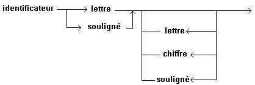Un identificateur peut avoir une taille quelconque mais seuls les 255 (63 pour les anciens compilateurs) premiers caractères sont significatifs.
-
-
Nombres :
Les nombres avec décimales ou exposants sont des constantes de type réel. Les autres nombres sont des entiers. Les valeurs doivent se trouver à l'intérieur de l'intervalle du plus grand type prédéfini entier ou réel.
Les nombres hexadécimaux sont des entiers et ils doivent être compris entre $00000000 et $FFFFFFFF.
-
Un nombre entier en notation décimale se compose d'une suite de chiffres éventiellement précédés d'un signe (exemple : 46). En notation hexadécimale, il se compose en plus, des lettres de A à F (ou a à f); il est alors préfixé par le signe $ (exemple : $2E).
Notation décimale :
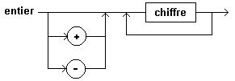Notation hexadécimale :
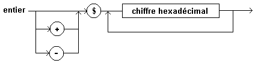 -
Un nombre réel doit contenir un point décimal ou un exposant - ou bien les deux.
S'il contient un point décimal, celui doit figurer entre deux chiffres (exemple : 46.0).
Et en notation scientifique : 0.46 E2 (se lit 0.46 fois dix à la puissance 2)
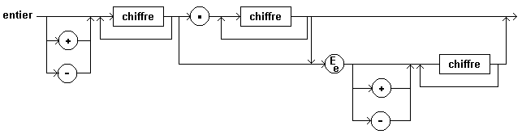
Notez que les nombres entiers sont des quantités exactes, alors que les nombres réels correspondent à des approximations.
-
-
Chaînes de caractères :
Une chaîne de caractères est une suite éventuellement vide de caractères délimitée par des apostrophes.
Pascal Objet offre la possibilité d'insérer dans les chaînes de caractères des caractères de contrôle (le signe dièse suivi directement d'une constante entière dans l'intervalle 0..255 représente le caractère ASCII correspondant).
UneMethode chaîne de caractères doit s'écrire sur une seule ligne.
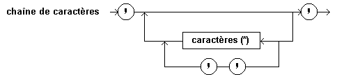(*) tous les caractères sauf l'apostrophe et le retour chariot.
'Exemple d''une chaîne' '' {chaîne vide} '''' {chaîne comprenant une apostrophe} #7#7'Debout !'#7#7 'Ligne 1'#13'Ligne 2'Dans un programme Pascal, on peut utiliser indifféremment majuscules et miniscules. Dans une chaîne, où les caractères se représentent eux-mêmes, il existe une différence entre une lettre minuscule et la majuscule correspondante. Le caractère espace (#32) n'y est pas considéré comme un séparateur et les caractères accentués peuvent y être employés.
-
Un exemple de programme Pascal :
Considérons le programme Pascal qui traduit le premier algorithme du chapitre précédent et retrouvons les éléments de langage.
PROGRAM Premier_Programme_Pascal ; {édition de la longueur de la circonférence d'un cercle } {$APPTYPE CONSOLE} // cfr. Delphi 4 CONST PI = 3.14159 ; VAR rayon,circonference : REAL ; BEGIN write('Rayon : ') ; readLn(rayon) ; circonference := 2 * PI * rayon ; writeLn('Circonférence : ',circonference) ; readLn END.symboles spéciaux : ; = ( ) * , := . : { }
mots réservés : PROGRAM CONST VAR BEGIN END
identificateurs standard : write readlin writeln
identificateurs :
-
de programme : Premier_Programme_Pascal
-
de constante : PI
-
de variable : rayon circonference
-
commentaires : {édition ... cercle}
directive de compilation : {$APPTYPE CONSOLE}
chaînes de caractères : 'Rayon : ' 'Circonférence : '
nombre entier :2
nombre réel :3.14259
Remarque : très souvent, dans la suite du cours, nous omettrons la directive de compilation (ainsi que le readLn final). Il est bien certain cependant, que dans l'environnement Delphi 4, vous devrez l'insérer si vous désirez construire une application console !
En-tête et partie déclaration :
-
Structure générale d'un programme :
Un programme Pascal est constitué d'un en-tête de programme suivi par un bloc de programme.
Le bloc est divisé en une partie déclaration dans laquelle sont définis tous les objets locaux au programme, et une partie instructions qui spécifie les actions à exécuter sur ces objets. Ainsi, toute variable apparaissant dans une instruction doit avoir été déclarée au préalable dans une déclaration de variable.
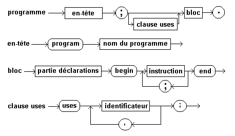Reprenons notre premier programme Pascal et tentons d'en découvrir la structure générale.
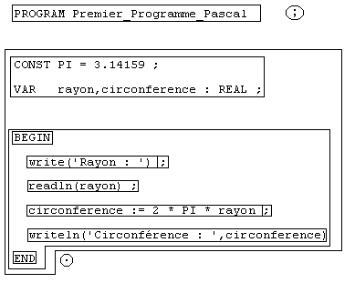 -
Partie déclaration :
La partie déclaration peut elle-même être divisée en plusieurs déclarations : de labels, de constantes, de types, de variables, de procédures et de fonctions. Contraitrement au Pascal Objet, le Pascal standard impose que ces déclarations - si elles existent - se fassent une seule fois et dans un certain ordre. Cette façon de procéder manque de souplesse.
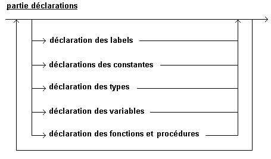Remarque : La partie déclaration peut être absente, comme dans l'exemple suivant :
program qui_ne_fait_rien ; BEGIN END.Nous ne nous intéresserons dans les paragraphes suivants qu'aux déclarations de constantes et de variables.
-
Déclaration des constantes :
On devrait parler plutôt de définition de constante; celle-ci permet d'introduire un identificateur comme synonyme d'une expression constante. Une expression constante est une expression qui peut être évaluée lors de la compilation, sans qu'il soit nécessaire d'exécuter le programme.
Exemples :
const PI = 3.14159 ; MESSAGE = 'Hello, world' ; CARACT = 'F' ; NBRCAR = ORD('Z') - ORD('A') + 1 ; MIN = 1 ; MAX = 100 ; CENTRE = (MAX - MIN) DIV 2 ;Il existe des identificateurs de constantes standard comme MAXINT qui représente le plus grand entier (INTEGER). Sa valeur, dans une implémentation 32 bits, est +2147483647 soit 231 - 1.
L'utilisation d'identificateurs de constante rend un programme plus lisible, facilite sa documentation et certaines modifications.
Remarques :
-
Les fonctions standard suivntes sont autorisées dans les expressions constantes : Abs, Addr, Chr, Hi, high, Length, Lo, Low, Odd, Ord, Pred, Ptr, Round, SizeOf, Succ, Swap, Trunc.
-
Notre Pascal possède un identificateur prédéclaré pi. Il s'agit non d'une constante, mais d'une fonction arithmétique qui renvoie la valeur 3.141592653587932385. Si, comme dans notre exemple, nous avons redéclaré pi, nous n'avons plus accès à cette fonction.
-
Il permte la définition de constantes typées. Une constante typée est une variable spécifiant une valeur initiale et qui ne peut pas être mdoifiée.
const max : integer = 100 ; titre : string = 'Les constantes typées' ;
-
-
Déclaration des variables :
Déclarer une variable, c'est donner un nom à une variable. C'est aussi lui associer un type ce qui détermine les valeurs qu'elle peut prendre, les opérations dont elle peut faire l'objet et son encombrement mémoire.
Chaque variable ne peut faire l'objet que d'une seule déclaration dans une partie déclarative donnée. Cette déclaration implique la réservation, si c'est approprié, d'une place en mémoire. Rappelons qu'en Pascal, les variables ne possèdent pas de valeur initiale définie. Les variables déclarées dans le bloc du programme sont appelées variables globales; ce sont les seules que nous connaissons pour l'instant.
Une déclaration de variables consiste en une liste d'idnetificateurs de variables et un type associé.
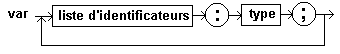<type> représente soit un identificateur de type, soit un descripteur de type.
Exemples :
var racine, quotient : REAL ; compteur, x, y : INTEGER ; reponse : CHAR ; trouve, continue : BOOLEAN ;

Partie instruction :
-
Introduction :
La partie instruction définit les instructions ou actions algorithmiques exécutées dans le bloc.
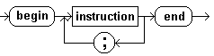Délimitée par les mots réservés begin et end, la partie instruction se compose d'une instruction ou d'une suite d'instructions séparées par ;. Le point-virgule, en Pascal, est un séparateur d'instructions, alors que dans d'autres langages, il termine une instruction. Dans l'exemple du programme qui_ne_fait_rien, l'instruction était l'instruction vide.
-
Instructions simples :
Il en existe de quatre sortes en Pascal :
-
instructin d'affectation
-
appel de procédure
-
instruction goto
-
instruction vide
-
L'instruction d'affectation :
L'instruction d'affectation remplace la valeur d'une variable par une nouvelle valeur. Cette nouvelle valeur est spécifiée par une expression qui doit être du même type ou du moins d'un type compatible avec le type de la variable.
<variable> := <expression>Exemple :
LDA : circonference <--- 2 * pi * rayon
Pascal : circonference := 2 * pi * rayon
-
L'instruction de procédure :
Une procédure est un sous-programme qui produit un effet. Il en existe des prédéclarées que vous pouvez appeler par des instructions de procédure. Il suffiit, pour ce faire, de spécifier l'identificateur de procédure ainsi que les paramètres nécessaires. Nous nous intéresserons aux procédures de lecture (entrées) et d'écriture (sorties).
-
À l'instruction LDA lire correspond les procédures read et readln,
-
Et à l'instruction écrire les procédures write et writeln.
-
-
Types :
-
Valeurs, variables et types :
De manière générale, les programmes expriment des calculs sur des valeurs. Cependant, les valeurs ne sont pas le seul genre d'objet qui apparaissent dans les programmes algorithmiques. En effet, les valeurs produites par l'exécution séquentielle des programmes peuvent être à mémoriser explicitement pour une utilisation ultérieure. Pour ce faire, un deuxième genre d'objet est nécessaire : les variables. Ces objets ont non seulement des propriétés logiques, mais aussi une représentation physique : les valeurs sont représentées par des emplacements en mémoire (chaque emplacement correspond à une adresse). Tous ces objets, c'est l'évidence, ne possèdent pas les mêmes propriétés : les nombres réels ne se manipulent pas comme les nombres entiers, les opérateurs relationnels produisent des valeurs logiques, les valeurs diffèrent des variables...
Quel que soit leur genre, tous ces objets ont leurs propriétés propres que l'on caractérise par un type.
Les langages algorithmiques associent aux objets en général et aux valeurs en particulier des types. Chaque type spécifie :
-
un ensemble d'objets, par ex. des valeurs entières,
-
un ensemble de propriété que ces objets doivent satisfaire et
-
un ensemble d'opérations qui utilisent ces objets comme opérandes ou les produisent comme résultats.
Ainsi, à chaque objet sera associé un type, et tous les objets d'un même type auront des propriétés communes, caractéristiques de ce type.
Dans le langage courant, nous disons qu'une valeur tel qu'une valeur tel que 12345 ou une variable x sont de type entier ... qu'en Pascal on définit par l'identificateur de type INTEGER. En toute rigueur, cela est inexact.
Une valeur entière et une variable entière sont deux objets qui ont des propriétés bien différentes :
-
12345 appartient au type INTEGER.
À ce type correspond un ensemble de valeurs entières, des propriétés (ces valeurs sont ordonnées) et des opérations (l'addition, la soustraction ...).
-
par contre, x dénote une variable entière qu'on devrait spécifier de type VAR INTEGER. Les opérations que nous connaissons sur de telles variables sont :
-
sa déclaration (var x : Integer;)
-
l'affectation (x:= 12345)
-
la prise de valeur (y := x +3)
À gauche du signe d'affectatipn, x dénote une variable et est de type VAR INTEGER. Il en est de même à droite, mais il doit être clair que l'addition + 3 est à effectuer sur la valeur de cette variable. l'opération prise de valeur est ici à effectuer bien qu'aucun opérateur ne la désigne : elle est implicitement spécifiée par le contexte.
On appelle opération implicite une opération à laquelle ne correspond aucun opérateur. L'opération prise de valeur est donc une opération implicite auquel correspond une transformation de type VAR INTEGER → INTEGER.
Remarque : vous pouvez écrire z := w ou z := (w) mais non (z) := w !
-
Les langages algoirithmiques sont définis de telle sorte que toutes les valeurs d'un type T donné puissent être représentées par des chaînes de bits de même taille. Il s'ensuit que toutes les variables du type T peuvent être représentées par des emplacements mémoire de même taille et que chacun de ces emplacements pourra contebur la représentation de n'importe quelle valeur du type T.
Il doit bien être évident cependant qu'à chaque classe de valeurs va correspondre une classe de variables de même structure. Dans la suite de ce cours, nous parlerons par abus de langage, d'une variable de type INTEGER par exemple, vius saurez ce que cela recouvre implicitement. Rappelons que contrairement à une variable, une valeur telle 12345 est supposée exister en dehors de toute exécution.
Un littéral (12345), une expression (12000+345), une constante (CONST N = 12345), un identificateur de variable après l'opération de prise de valeur peuvent dénoter la même valeur.
Lorsque nous parlons de variables, il peut s'agir, selon le contexte, des variables algorithmiques, de variables de programme ou de variables d'état. Une variable d'état est caractérisée comme une variable de programme par un identificateur et un type. Elle est par contre la seule pour laquelle nous pouvons parler d'allocation mémoire et de valeur. Cependant, par référence aux variables d'état, nous dirons d'une variable de programme qu'elle est... déclarée lorsque sont connus identificateur et son type, définie lorsqu'elle est déclarée et que l'on peut faire référence à son allocation physique en mémoire, initialisée lorsqu'elle est définie et qu'une valeur lui a été associée (d'après Cardon et Charras).
-
-
Introduction :
Il existe en Pascal Objet sept classes majeures de types.
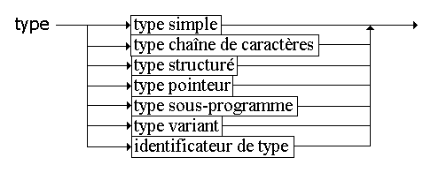Ces différentes classes sont décrites dans la suite du cours. Nous nous intéresserons dans ce chapitre aux types simples.
-
Types simples :
Les types simples sont comme leurs noms l'indiquent les types de base; pour la plupart, ce sont ceux que l'on trouve tout faits sur les ordinateurs. Ces types sont des types de valeurs simples, c'est-à-dire qui ne sont pas considérés, dans un langage donné, comme composées d'éléments discernables. Les valeurs simples sont les valeurs les plsu classiques, en particulier les nombres.
Le langage Pascal sépare les types simples en deux classes :
-
d'une part les types réels et
-
d'autre part les types scalaires.
Un type scalaire (étymologiquement scalaire signifie échelle) caractérise un ensemble fini et ordonné de valeurs. On parle aussi de type discret ou ordinal. À chaque valeur d'un type scalaire est associé un rang qui est une valeur entière (ORDINALE). Sauf dans le cas des types entiers (le rang d'un élément de type entier est la valeur de l'élément lui-même), la première valeur de tous les types scalaires est de rang 0, la suivante 1 et ainsi de suite.
Chaque valeur a un prédécesseur sauf la première et un successeur sauf la dernière (cfr ORD, PRED, SUCC).
Il existe des types simples scalaires standards (prédéclarés) comme les types INTEGER, CHAR et BOOLEAN. D'autres doivent être déclarés par l'utilisateur : ce sont les types énumérés et intervalle.
Tous les types scalaires partagent les propriétés suivantes :
Les fonctions standards low et high peuvent être appliquées à un tyê scalaire ou à une référence de variable d'un type scalaire. La fonction low renvoie la borne inférieure alors que la fonction high renvoie la borne sdupérieure de l'intervalle du type scalaire en question.
- Ord, fonction
-
Ord renvoie le rang d'une expression ordinale.
Unité : System
Catégorie : routines ordinales
function Ord(X):Longint;
Description : La fonction Ord renvoie le rang d'une expression de type scalaire. X est une expression de type scalaire. Le résultat est de type Longint, sa valeur indiquant le rang de X.
- Succ, fonction
-
Succ renvoie le successeur de l'argument.
Unité : Sytem
Catégorie : routines ordinales
function Succ(X);
Description : X est une expression de type scalaire. Le résultat, de même type que X, est le successeur de X.
- Pred, fonction
-
Pred renvoie le prédécesseur de l'argument.
Unité : Sytem
Catégorie : routines ordinales
function Pred(X);
Description : X est une expression de type scalaire. Le résultat, de même type que X, est le prédécesseur de X.
-
-
Les types réels :
Classiquement, il n'existait en Pascal qu'un seul type réel : le type REAL.
Quelle définition nous en donne N.WIRTH ?
"Une valeur de type REAL est un élément du sous-ensemble des nombres réels que l'on peut représenter sur une machine donnée ...".
Actuellement, il existe six types réels fondamentaux : Real48, Single, Double, Extended, Comp et Currency... et un type réel générique : Real (équivalent à Double). À chacun de ces types réels correspond un intervalle et une précision spécifiques, indiqués dans le tableau ci-dessous (manuel de référence) :
Type Intervalle Chiffres significatifs Taille en octets Real48 2.9 x 10-39..1.7 x 1038 11-12 6 Single 1.5 x 10-45..3.4 x 1038 7-8 4 Double 5.0 x 10-45..3.4 x 1038 15-16 8 Extended 3.4 x 10-4932..1.1 x 104932 19-20 10 Comp -263+1..263-1 19-20 8 Currency -922337203685477.5808..922337203685477.5807 19-20 8 Le type Comp (Computational) est un entier de 64 bits qui contient les valeurs intégrales comprises entre -9 223 372 036 854 775 808 et 9 223 372 036 854 775 807 (-263 à 263-1).
Le type Currency est un type de données à virgule fixe recommandé pour les calculs monétaires. Il est stocké en tant qu'entier scalaire de 64 bits avec les quatre chiffres les moins significatifs représentant implicitement qutre décimales. L'intervalle de valeurs de Currency est compris entre -922 337 203 685 477,5808 et 922 337 203 685 477,5807. Combinés avec d'autres types réels dans des affectations et des expressions, les valeurs de type Currency sont automatiquement graduées en divisant ou en multipliant par 10 000. Puisque les nombres stockés au format Currency sont des représentations exactes, les opérations sur les valeurs Currency ne sont pas sujettes à des erreurs d'arrondi.
Remarque : Le type Real48 qui correspond à l'ancien type Real est fourni pour assurer une compatibilité avec les versions précédentes de Pascal. Comme son format de stockage n'est pas natif dans la gamme CPU d'Intel, les opérations sur des valeurs de ce type sont plus lentes que d'autres types de calcul en virgule flottante. Les types Single, Double et Extended correspondent aux formats natifs des processeurs Intel Pentium, de précision simple, double et étendue.
Mathématiquement, le type réel comporte un nombre infini de valeurs. Dans tout ordinateur, cependant, une information de type réel est codée sur un nombre limité de bits. Entre deux valeurs de type réel, il n'existe pas toujours une valeur de type réel. L'arithmétique utilisée avec des valeurs de type réel peut conduire à des résultats légèrement faussés en raison des erreurs d'arrondi. Si les types entiers sont des types exacts, les types réels sont par essence des approximations ... et peuvent donc introduire des problèmes de précision et de portabilité. Les nombres réels sont représentés en notation à virgule flottante? Ils se composent d'une partie fractionnaire (la mantisse) que multiplie un exposant. Le nombre de chiffres significatifs de la mantisse et l'intervalle de valeurs possibles pour l'exposant déterminent l'intervalle et la précision du type réel.
Remarque : Toutes les opérations arithmétiques sur des valeurs de type réel sont exécytées avec l'intervalle et la précision du type EXTENDED. Cette plus grande précision permet de réduire les erreurs d'arrondi, et la largeur de l'intervalle permet de réduire les risques de dépassements de capacité positifs et négatifs.
Comparaison de réels :
Du fait que les valeurs de type réel sont des approximations, les résultats de comparaisons de valeurs de types réels différents ne sont pas toujours conformes à l'attente.
//... var x : Single ; y : Double ; r : Real ; begin x := 1 / 3 ; y := 1 /3 ; writeln(x : y) ; // FALSE r := 1 / 3 ; writeln(r = 1 / 3) ; // FALSE // ... end.Le premier writeln affichera FALSE. Cette "inexactitude" vient de ce que la précision de x est de 7 à 8 chiffres, alors que celle de y est de 15 à 16 chiffres. Ainsi, lorsque ces deux valeurs sont converties en type extended, elles ne coïncident que sur 7 ou 8 chiffres. De la même manière, le deuxième writeln affichera FALSE puisque le résultat de 1/3 est calculé avec 20 chiffres significatifs.
//... var s : Single ; d : Double ; e : extended ; begin s := 1 / 3 ; d := 1 / 3 ; e := 1 / 3 ; writeln(s : 20 : 17) ; // 0.33333334326744080 writeln(d : 20 : 17) ; // 0.33333333333333331 writeln(e : 20 : 17) ; // 0.33333333333333333 //... end.Opérations :
Un certain nombre d'opérateurs arithmétiques binaires correspondent aux types réels.
Opérateurs Opérations + addition réelle - soustraction réelle * multiplication réelle / division réelle Il est à remarquer que pour l'addition, la soustraction et la multiplication réelle, il suffit qu'un des opérandes soit de type réel (l'autre pouvant être de type entier).
Pour la division réelle (/), il est même permis que les deux opérandes soient de type entier; le résultat est évidemment toujours de type réel. Rappelons que le dénominateur doit être différent de zéro.
Comme pour le type entier, il existe deux opérateurs arithmétiques unaires : l'opérateur identité de signe (+) et l'opérateur inversion de signe (-).
-(-8.3) est équivalent à +8.3 ou 8.3.
Les opérateurs relationnels (= <> < <= >= >) s'appliquent également avec des opérandes de type réel; le type du résultat est évidemment booléen. Signalons pour terminer qu'un des opérandes peut être de type entier et l'autre d'un type réel.
-
Types scalaires prédéclarés :
-
Types entiers :
Pascal Objet distingue sept types fondamentaux (ne dépendant ni du processeur, ni du système d'exploitation). Chacun d'eux représente un sous-ensemble particulier de valeurs entières.
Type Intervalle Format (en bits) SHORTINT -128..+127 8 (signé) SMALLINT -32768..32767 16 (signé) LONGINT -2147483648..2147483647 32 (signé) INT64 -263..263-1 64 (signé) BYTE 0..255 8 (non signé) WORD 0..65535 16 (non signé) LONGWORD 0..4294967295 32 (non signé) Les types entiers génériques sont Integer et Cardinal. L'intervalle et le format sont ceux qui permettent les calculs entiers les plus rapides en tenant compte du processeur et du système d'exploitation sous-jacent.
Type Intervalle Format INTEGER -32768..32767 16-bits signé CARDINAL 0..65535 16-bits non signé INTEGER -2147483648..214743647 32-bits signé CARDINAL 0..4294967295 32-bits non signé Les propriétés de l'arithmétique ordinaire ne s'appliquent que dans la mesure où le résultat de l'opération reste dans le domaine, c'est-à-dore qu'il n'y ait pas de dépassement de capacité. Cette restriction mise à part, toute opération sur des données entières est exacte.
Les opérateurs suivants s'appliquent à des opérandes de type entier et produisent un résultat entier.
Opérateurs Opérations + addition entière - soustraction entière * multiplication entière DIV division entière MOD modulo (reste de la division entière) Les opérateurs DIV et MOD exigent que le second opérande soit différent de zéro.
Les opérateur relationnels (= <> < <= >= >) s'appliquent également avec des opérandes de type entier; le type du résultat est évidemment booléen.
Il existe également des opérations logiques qui s'appliquent à des entiers pour donner des entiers. Ces "entiers" doivent cependant s'interpréter comme des chaînes de bits.
Les opérations I shl J et I shr J décalent la valeur I de J bits vers la gauche pour shl, et vers la droite pour shr. Le résultat est du même type entier que I.
Opérateur Opération Types des opérandes Type du résultat not négation binaire entier entier and et binaire entier entier or ou binaire entier entier xor ou exclusif binaire entier entier shl décalage à gauche binaire entier entier shr décalage à droite binaire entier entier
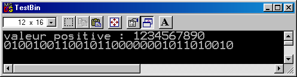program TestBin; {$APPTYPE CONSOLE} const ZERO : Cardinal = 0 ; var masque , x : Cardinal ; begin write('valeur positive : ') ; readLn(x) ; masque := not(not ZERO shr 1) ; repeat if (x and masque) <> ZERO then write('1') else write('0') {fi} ; masque := masque shr 1 until masque = ZERO ; writeLn ; readLn end. -
Type CHAR :
Le type CHAR comprend l'ensemble des caractères disponibles. Malheureusement il n'existe pas d'ensemble de caractères qui soit accepté par tous les ordinateurs. La définition du Pascal standard ne donne donc que des conventions générales.
Ainsi, l'ordre des caractères doit préserver l'ordre alphabétique des lettres et l'ordre numérique des chiffres : 'a' < 'b' et '0' < '9'.
Les valeurs de type CHAR sont pourvues d'un nombre ordinal qui est un entier non négatif et qui traduit le rang de chaque caractère. L'implémentation qui est la nôtre a été décrite au chapitre 3. Le caract!re 'A' y possède le numéro d'ordre 65, 'B' 66, ... 'a' 95 et 'b' 96 ...
Les opérateurs relationnels s'appliquent à des opérandes de type CHAR. Dans notre environnement, l'expression ('A' < 'a') a la valeur TRUE.
Toutes ces propriétés nous rappellent bien que le type de caracyère générique.
Les types de caractères fondamentaux sont AnsiChar et WideChar.
Les valeurs du type AnsiChar sont les caractères (en octets), rangés dans l'ordre du jeu de caractères ANSI étendu.
Les valeurs du type WideChar sont les caractères (en mots), rangés dans l'ordre du jeu Unicode. Les 256 premiers caractères du jeu Unicode correspondent aux caractères ANSI.
-
Type BOOLEAN :
Une valeur booléenne est une des valeurs logiques "vrai" ou "faux" que l'on notera par les identificateurs de constantes prédéfinis TRUE et FALSE.
Les opérateurs booléens sont :
-
la conjonction logique (AND)
-
la disjonction logique (OR)
-
la négation (NOT)
-
le Pascal Objet ajoute l'opérateur XOR qui correspond au ou exclusif logique.
Ces opérateurs "opèrent" entre variables, constantes et expressions de types booléens.
Opérations booléennes :
Opérateur Opération Type des opérandes Type du résultat not (unaire) négation logique booléen booléen and et logique booléen booléen or ou logique booléen booléen xor ou exclusif logique booléen booléen Si p et q sont des variables booléennes, on a :
p q p AND q p OR q p XOR q NOT p TRUE TRUE TRUE TRUE FALSE FALSE TRUE FALSE FALSE TRUE TRUE FALSE FALSE TRUE FALSE TRUE TRUE TRUE FALSE FALSE FALSE FALSE FALSE TRUE Les autres fonctions logiques (il y en a seize en tout !) peuvent être construites grâce aux opérateurs de relation.
Lois de de Morgan :
Les lois de de Morgan sont souvent très utiles si l'on désire, par exemple, passer d'une condition de continuation à la condition de terminaison inverse.
NOT (p OR q) = NOT p AND NOT q
NOT (p AND q) = NOT p OR NOT q
Exemple : le complémentaire de l'expression booléenne (x >= 15) OR (y < 4) est (x < 15) AND (y >= 4).
Le type booléen est ordonné; il est en effet prédéfini de façon à ce que FALSE < TRUE. AU niveau format interne des données, un type booléen est stocké comme un octet qui peut prendre la valeur 0 (FALSE) et 1 (TRUE).
En fait, le type booléen est un type énuméré.
Comme le type booléen est un type scalaire ordonné, nous pouvons définir simplement toutes les fonctions logiques.
Si p et q sont deux booléens :
p <= q définit l'implication
p = q définit l'équivalence
p <> q définit le ou exclusif
Entrées-Sorties :
S'il est possible d'imprimer une valeur booléenne, il est par contre impossible de lire directement un booléen !
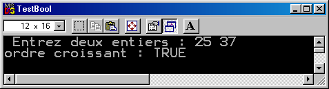program TestBool; {$APPTYPE CONSOLE} var nbre1, nbre2 : Integer ; croissant : Boolean ; begin write(' Entrez deux entiers : ') ; readLn(nbre1,nbre2) ; croissant := nbre1 <= nbre2 ; writeln('ordre croissant : ', croissant) ; readLn end.Remarques : l'instruction test := Nbre1 < Nbre2 est péférable à l'instruction conditionnelle :
if Nbre1 <= Nbre2 then test := true else test := false {fi}Signalons enfin que les types ByteBool, WordBool et LongBool existent pour proposer une compatibilité avec l'environnement Windows et certains langages.
-
-
-
Types scalaires déclarés :
-
Type énuméré :
Nous pouvons définir un nouveau type simple en énumérant toutes les valeurs distinctes qui le composent. Les valeurs de ce nouveau type sont représentées par des identificateurs et sont donc des constantes du nouveau type.
La définition d'un type énuméré de la forme :
Type enum = (c1,c2,...,cn) ;-
enum est l'identificateur du nouveau type.
-
c1,c2,...,cn sont les nouveaux identificateurs de constantes.
Exemples :
Type Tcouleur = (BLEU,JAUNE,VERT,ROUGE) ; Tjour = (LU,MA,ME,JE,VE,SA,DI) ; TAssaisonnement = (HUILE,VINAIGRE,SEL,POIVRE) ; Tchoix = (AM,STRAM,GRAM) ; Tnote = (UT,RE,MI,FA,SOL,LA,SI) ;La définition de chacun de ces types introduit :
-
un nouvel identificateur de type (TChoix par ex.)
-
l'ensemble des identificateurs dénotant les valeurs de ce nouveau type (AM,STRAM,GRAM).
Nous pouvons dès lors utiliser ces identificateurs comme des constantes.
Les identificateurs qui dénotent les valeurs d'un nouveau type correspondent à des constantes et s'utilisent comme telles. Il convient évidemment de ne déclarer une constante que dans une seule déclaration de type. Ainsi, les déclarations suivantes sont erronées :
Type Fruit = (pomme,orange,pore) ; Color = (bleu,rouge,orange) ;Suppons les déclarations de variables suivantes :
var col1, col2 : TCouleur; ch : TChoix; n : TNote;nous pouvons écrire :
col1 := ROUGE ; // col1 := TCouleur(3) ; col2 := VERT ; // col2 := TCouleur(2) ; n := FA ; // n := TNote(3) ; ch := GRAM ; // ch := TChoix(2) ;Comme dans tout type scalaire, il existe un ordre; cet ordre est déterminé par l'ordre d'écriture des identificateurs de constantes dans la déclarative.
BLEU < JAUNE < VERT < ROUGEFormat interne des données :
Les scalaires énumérés ayant moins de 256 valeurs possibles sont rangés dans un seul octet (sinon deux). Cet octet contient la valeur ordinale de la variable; la valeur ordinale correspond au rang. Le rang d'une constante énumérée est déterminé par sa position dans la séquence d'énumération, la première constante ayant le rang 0. Aussi le rang (valeur ordinale) de jaune est 1 et celui de rouge est 3.
Une variable de type TCouleur (exemple col1) pourra prendre une des quatre valeurs : BLEU, JAUNE, VERT ou ROUGE. Le domaine du type TCouleur correspond bien à un ensemble fini et ordonné (type SCALAIRE).
Les opérateurs relationnels (=, <>, <, >, <=, >=) peuvent s'appliquer à tous les types énumérés tant que les deux opérandes sont de même type.
(col1 <= col2) est une expression booléenne.
Remarque : À propos de booléen, signalons que le type boolean est en fait un type énuméré prédéclaré : Type boolean = (false,true).
Les fonctions standards comme ORD, PRED, SUCC peuvent être utilisées avec des arguments de type scalaire et donc énuméré.
Les variables de type énuméré pourront également être utilisées comme compteur de boucle ou sélecteurs de cas.
Les variables et les valeurs d'un type énuméré ne sont pas acceptées par writeln, read et readln...
Les langages de programmation qui permettent la définition de types énumérés nous offrent un mécanisme simple d'ABSTRACTION; il contient de les utiliser toutes les fois où cela est possible. D'une part, cela augmente la lisibilité de vos programmes, d'autre part cela renforce le typage de vos données. Un typage sévère assure que chaque objet a un ensemble bien défini de valeurs et qu'un ensemble bien défini d'opérations s'applique à ces objets : cela empêche les confusions entre des concepts logiquement différents.
Dans des langages plus anciens, il est souvent nécessaire d'implémenter des concepts comme les types énumérés à l'aide de types plus primitifs tels que les entiers et de donner des valeurs telles 0, 1, 2 et 3 à des vakeurs comme bleu, jaune, vert et rouge. Des affectations accidentelles comme col1 := col2 + 10 ne peuvent alors être détectées par le compilateur (il y a pourtant une double erreur : au niveau de l'oépration + et au niveau du domaine des valeurs).
-
-
Type intervalle :
On constate souvent qu'une variable doit prendre ses valeurs dans un intervalle de valeurs bien déterminé. Il est alors intéressant de définir un nouveau type (sous-type), caractérisé par un ensemble de valeurs qui est un sous-ensemble de valeurs d'un autre type de base, type associé ou type hôte.
Un type de données peuvent être défini comme un intervalle d'un autre type scalaire déjà défini. Cette définition donne la plus petite et la plus grande valeur de l'intervalle. La première constante spécifie la borne inférieure et ne dois pas être plus grande que la deuxième constante, la borne supérieure (ces deux constantes sont du même type scalaire).
Un type intervalle conserve toutes les priorités du type scalaire associé; il n'y a aucun moyen de restreindre l'ensemble des opérations du type de base ! Il n'est restreint que dans l'échelle de ses valeurs; c'est pourquoi on peut parler de sous-type.
Exemples :
type TJour = (LU,MA,ME,JE,VE,SA,DI) ; THeure = 0..60 ; TMajuscule = 'A'..'Z' ; Travail = LU..VE ;Le type Travail est un sous-type du type TJour qui doit être défini préalablement.
Si nous déclarons var h : THeure ;, l'affectation h := 15 est correcte alors que h := 90 ne l'est pas.
Pascal permet lors de la déclaration de variables, l'utilisation de descripteurs de type à la place d'identificateurs de type :
var x : 17..87 ;plutôt que :
type TInter = 17..87 ; var x : TInter ;Nous vous déconseillons un tel raccourci, et même nous vous conseillons la forme déclaratice suivante :
const MAX = 87 ; MIN = 17 ; type TInter = MIN..MAX ; var x : TInter ;Remarques : Supposons les déclarations de variables suivantes :
var x : TInter ; y : Integer ;Nous l'avons signalé, une affectation tel que x := 15000 est incorrecte; elle sera décelée par le compilateur : il s'agit d'un CONTRÔLE STTAIQUE c'est-à-dire liké au texte.
Par contre l'affectation x := y est parfaitement légale du point de vue syntaxique. Bien sûr, à l'exécution, la valeur de la variable y peut être ou non dans l'intervalle MIN..MAX. Si cette valeur y est comprise, tout va bien; sinon une erreur doit être signalée. Il s'agit alors d'un CONTRÔLE DYNAMIQUE c'est-à-dire lié à l'exécution. L'affectation y := x marchera évidemment toujours.
Pascal Objet n'introduit pas automatiquement des tests de validité à l'exécution. Il convient, pour ce faire, d'activer la vérification des limites.
Une déclaration de type intervalle n'introduit pas vraiment de nouveau type mais plutôt un sous-type, c'est-à-dire un sous-ensemble défini au moyen d'une constrainte (la restriction ne s'appliquant qu'aux valeurs).
Le rang de chaque valeur d'un intervalle est celui qu'elle a dans le type de base.
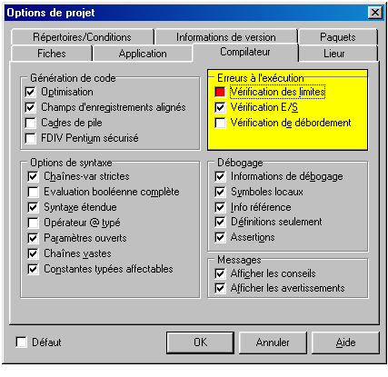
-
-
Procédures et fonctions standards :
Vous connaissez déjà des procédires prédéclarées comme write et writeln.
Pascal Objet propose les procédures de décrémentation (dec) et d'incrémentation (inc).
Si x est une variable de type scalaire et n une expression facultative de type entier alors :
-
dec(x) correspond à l'instruction x := x - 1
-
dec(x,n) correspond à l'instruction x := x - n
-
inc(x) correspond à l'instruction x := x + 1
-
inc(x,n) correspond à l'instruction x := x + n
Les procédures dec et inc génèrent un code optimisé.
Une foncion est un sous-prgramme qui renvoie une valeur; d'un point de vue syntaxique et sémantique, une fonction correspond à une expression.
Il existe ainsi une série de fonctions mathématiques prédéfinies qui facilitent la programmation en Pascal :
Fonction Valeur abs(x) valeur absolue de x arcTan(x) arc dont la tangente est x cos(x) cosinus de x exp(x) exponentielle de x : ex frac(x) partie fractionnaire de x int(x) partie entière de x ln(x) logarithme naturel de x pi valeur de pi sin(x) sinus de x sqr(x) carré de x sqrt(x) racine carrée de x program TestFonctionsArithmetiques ; {$APPTYPE CONSOLE} var r : Real ; i : Integer ; begin i := abs(-123) ; r := sqr(12.3) ; writeln(i) ; {123} writeln(r:8:4) ; {151.2900} writeln(sqrt(r):8:4) ; { 12.3000} readLn end. -
-
Règles de priorité :
Une expression est une phrase de programme spécifiant un calcul sur un ou des opérandes et dont l'exécution produit un résultat. Telle que nous l'envisageons ici, une expression renvoie une valeur.
Dans l'évaluation d'une expression où interviennent plusieurs opérateurs, il convient d'éliminer toute ambiguïté dans l'ordre de réalisation des opérations. Chaque langage définit pour ce faire certaines règles et associé à chaque opérateur une priorité.
Le langage Pascak divise l'ensemble des opérateurs en catégories hiérarchiques (du plus prioritaire au moins prioritaire) :
-
le moins unaire
-
les opérateurs not, @
-
les opérateurs multiplificatifs (*, /, DIV, MOD, AND, SHL, SHR ...)
-
les opérateurs additifs (+, -, OR, XOR ...)
-
les opérateurs relatinnels (=, <>, <=, >=, <, >, IN, IS ...)
Considérons un opérande entre deux opérateurs :
-
Si les opérateurs sont de même priorité, l'opérande sera liée à l'opérateur de gauche sinon au plus prioritaire.
2 + x * 4 <=> 2 + (x * 4) { * plus prioritaire } 3 * x /2 <=> (3 * x) / 2 { même priorité => opérateur de gauche } -
Afin de traiter leur résultat comme un seul opérande, les expressions contenues entre parenthèses sont évaluées en premier lieu. Nous vous conseillons d'utiliser les parenthèses.
Exemple :
Si on attribue respectivement aux variables entières a, b et c les valeurs 8, 15 et -4, comment sera évaluée l'expression numérique suivante :
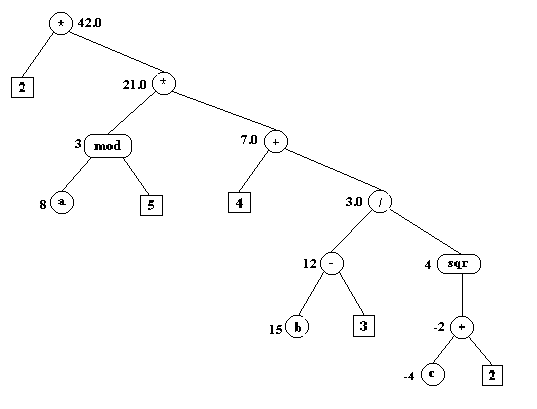2 * ((a mod 5) * (4 + (b -3) / sqr (c + 2)))
-
Instructions structurées :
Nous allons au cours de ce chapitre étudier deux nouvelles instructions structurées : l'instruction "FOR" qui est une répétitive et l'instruction "CASE" qui est une conditionnelle particulière.
-
L'instruction IF dans le choix entre deux éventualités selon la valeur booléenne d'une expression. L'instruction CASE, ou instruction de sélection, permet de choisir entre n éventualités selon la valeur discrète d'une expression appelée expression de sélection. Cette instruction permettra donc à votre programme d'effectuer - sous certaines conditions - un choix parmi plusieurs possibilités sans devoir employer des quantités d'instructions IF.
-
L'instruction FOR s'utilisera lorsque l'on désirera lorsque l'on désirera un certain traitement un nombre précis de fois.
Ces deux instructions ont en commun le fait qu'elles sont à la fois limitées et puissantes.
Une autre caractéristique commune est le fait qu'elles ne sont pas "standardisées". D'un langage algorithmique à l'autre et même parfois d'une implémentation à l'autre d'un même langage, des variantes significatives existent.
Proposer dans ce cas une forme générale de ces instructions en L.D.A est difficile. Tout au plus, pouvons-nous proposer une traduction L.D.A des instructions "CASE" et "FOR" Pascal !
Par exemple :
cas où (expression de sélection) vaut
v1 : traitement1
v2 : traitement2
... : ...
autres cas : traitementN
fincas
pour Vc allant de Vi à Vf par pas de +1 faire
traitement
fpourAvant de passer à l'étude détaillée de ces deux instructions, il peut être intéressant de signaler qu'il existe dans certains langages une instruction de sélection généralisée sans sélecteur que l'on nomme choix multiple.
La forme L.D.A du choix multiple pourrait être la suivante :
cas où
condition1 : traitement1
condition2 : traitement2
...
autre cas : traitementN
fincasDans un choix multiple, les conditions sont mutuellement exclusives. Cette instruction peut être facilement simulée en Pascal :
if expr1
then instruction1
else
if expr2
then instruction2
else
if expr3
then instruction3
else instructionNPour éviter une cascade inutile de tests, on a tout intérêt à ordonner les tests dans le sens des probabilités décroissantes. Il n'y a, de plus, aucune raison d'imbriquer les instructions...
if expr1 then instruction1
else if expr2 then instruction2
else if expr3 then instruction3
else instructionN-
Instruction CASE :
L'instruction CASE est utilisée pour choisir une action parmi plusieurs suivant la valeur d'une expression.
Syntaxe :
Exemples :
... case abs(k) of 0 : p := 0 ; 1..5,7 : begin p := m - 1 m := 0 end ; else{case} p := m + 1 end{case} ...case caract of 'a', 'e', 'i', 'o', 'u', 'y' : writeln('voyelle minuscule') ; 'A', 'E', 'I', 'O', 'U', 'Y' : writeln('voyelle majuscule') ; 'b'..'d', 'f'..'h', 'j'..'n', 'p'..'t', 'v'..'x', 'z' : writeln('consonnes minuscules') ; 'B'..'D', 'F'..'H', 'J'..'N', 'P'..'T', 'V'..'X', 'Z' : writeln('consonnes majuscules') ; '0'..'9' : writeln('chiffres') else{case} writeln('autres caractères ...') end{case} ; ...Sémantique :
L'exécution de cette instruction conditionnelle commence par celle de l'expression de sélection qui produit une valeur V d'un type scalaire. Le choix de la liste de choix qui contient cette valeur V parmi les sélecteurs de sa liste de sélecteurs est sélectionné et l'action correspondante est exécutée.
Les sélecteurs sont aussi appelés étiquettes de cas ou encore constantes de cas; ces sélecteurs sont en effet des constantes.
Ils doivent être uniques et d'un type scalaire compatible avec le type de l'expression de sélection. Dans les réalisations anciennes, Pascal Objet imposait que l'expression de sélection soit d'un type scalaire dont les bornes étaient comprises entre certaines valeurs (-32768 et 32767).
Que se passe-t-il si aucun des sélecteurs ne correspond à la valeur de sélection ?
-
Si la partie ELSE (autre choix) est présente, l'instruction correspondante est exécutée,
-
sinon aucune instruction n'est exécutée et le traitement se poursuit par l'exécution de l'instruction (si elle existe) qui suit l'instruction CASE.
Remarques :
-
En Pascal, l'instruction case possède cependant certains défauts. En absence d'une clause else, le fait qu'aucune des constantes de cas ne soit égale à la valeur de l'expression de sélection devrait constituer une ereeur.
-
Autre remarque qui est une constation : le else d'une instruction case peut être précédé d'un point-virgule (;) et le délimiteur final d'une construction case est le mot réservé end (auquel ne correspond aucun begin !).
-
Pour les différencier de leurs autres utilisations, il peut être utile d'ajouter un commentaire à ces mots réservés (cfr exemple ci-dessus else{case} et end{case}).
-
-
Instruction FOR :
L'instruction for indique qu'une instruction (le corps de la répétitive) doit être exécutée un nombre précis de fois, pendant qu'une variable de contrôle progresse au sein d'une intervalle de valeurs discrètes.
La variable de contrôle progresse donc entre deux valeurs fixées : la valeur initiale et la valeur finale, et cette progression est soit ascendante (TO), soit descendante (DOWNTO).
Syntaxe :
L'emploi du mot réservé to provoque l'incrémentation d'une unité à la fois de la variable de contrôle à chaque tour de boucle, alors que l'emploi de downto en provoque la décrémentation.
L'instruction n'est pas exécutée si, en utilisant la clause to, la valeur initiale est strictement supérieure à la valeur finale ou si, en utilisant la clause downto, la valeur initiale est strictement inférieure à la valeur finale.
La variable de contrôle est une variable (déclarée dans le bloc contenant l'instruction for) de type scalaire et les valeurs initiales et finales sont des expressions de type compatible avec la variable de contrôle.
L'instruction suivante provoquera l'affichage des valeurs de 1 à 10 :
for compteur := 1 to 10 do write(compteur:4)Celle-ci lit n entiers et effectue leur somme :
somme := 0 ; for compteur := 1 to n do begin readln(nbre) ; somme := somme + nbre end ; ...Voici, comme dernier exemple un programme dont l'exécution provoquera l'affichage des jours de la semaine.
program AfficherJourSemaine ; {$APPTYPE CONSOLE} type TJour = (LU,MA,ME,JE,VE,SA,DI) ; var j : TJour ; begin for j := LU TO DI DO case j of LU : writeln('lundi') ; MA : writeln('mardi') ; ME : writeln('mercredi') ; JE : writeln('jeudi') ; VE : writeln('vendredi') ; SA : writeln('samedi'); DI : writeln('dimanche') end{case} ; readLn end.Dans de nombreux ouvrages, on retrouve l'assertion suivant laquelle l'instruction :
for indice := expr1 to expr2 do instructionest équivalente aux instructions suivantes :
indice := expr1 ; while indice <= expr2 do begin instruction ; inc(indice) endIl convient de relativiser cette "équivalence".
La définition du langage Pascal impose certaines restrictions au sujet de l'instruction FOR :
-
La valeur de la variable de contrôle ne peut en aucun cas être modifiée dans l'instruction qui correspond au corps de la boucle (Pascal Objet permet la modification de la variable de contrôle dans le corps de la boucle ! Ne profitez pas de ce laxisme coupable !).
-
La valeur finale est déterminée une seule fois lors de l'entrée dans la boucle for. Ainsi si expr2 correspondait à la valeur d'une certaine variable Vf, la modification de la valeur de Vf dans le corps de la boucle ne changerait pas le nombre de répétitions.
-
À la sortie (normale) de l'instruction for, la valeur de la variable de contrôle est indéfinie.
Dans le manuel de référence, l'instruction for v:= expr1 to expr2 do Corps est dite équivalente à :
begin temp1 := expr1 ; temp2 := expr2 ; if temp1 <= temp2 then begin V := temp1 ; Corps ; while V <> temp2 do begin V := succ(V) ; Corps end end endtemp1 et temp2 sont des variables temporaires du même type que la variable de contrôle V et qui n'apparaissent nulle part ailleurs dans le programme.
Cette équivalence est logique et l'utilisation du for générera un code optimisé !
Application :
-
Justifiez cette équivalence.
-
Réécrire les programmes du chapitre 4 où l'utilisation de l'instruction for est souhaitable.
Remarque : Curieusement, à partir de la version du Pascal Objet qui correspond à Delphi 4, la réalisation du for a changé et l'équivalence présentée ici a disparu du manuel de référence. La valeur non significative de la variable de contrôle est "égale" à succ(temp2) si l'itération a eu lieu !
Exercices :
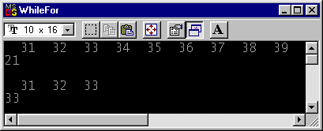program WhileFor; {$APPTYPE CONSOLE} var EXPR1 : Cardinal = 31 ; EXPR2 : Cardinal = 39 ; k : Cardinal ; begin for k := EXPR1 to EXPR2 do begin write(k:4) ; dec(EXPR2,2) end ; writeLn ; writeLn(EXPR2) ; writeLn ; EXPR2 := 39 ; k := EXPR1 ; while k <= EXPR2 do begin write(k:4) ; dec(EXPR2,2) ; inc(k) end ; writeLn ; writeLn(EXPR2) ; writeLn ; readLn end.
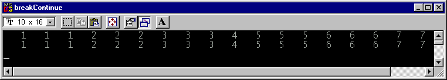program breakContinue; {$APPTYPE CONSOLE} var EXPR1 : Cardinal = 1 ; EXPR2 : Cardinal = 9 ; k : Cardinal ; begin for k := EXPR1 to EXPR2 do begin write(k:4) ; if k = 4 then continue ; write(k:4) ; if k = 7 then break ; write(k:4) end ; writeLn ; k := EXPR1 ; while k <= EXPR2 do begin write(k:4) ; if k = 4 then begin inc(k) ; // sinon vous bouclez !!! continue end ; write(k:4) ; if k = 7 then break ; write(k:4) ; inc(k) end ; writeLn ; readLn end. -
Type string (chaînes courtes) :
Il existe aujourd'hui plusieurs types chaîne.
Sans parler des chaînes à zéro terminal, le Pascal Objet gère les types chaînes prédéfinis suivants (manuel de référence) :
| Type | Longueur maximum | Mémoire nécessaire | Utilisation |
|---|---|---|---|
| ShortString | 255 caractères | de 2 à 256 octets | string classique |
| AnsiString | ~231 caractères | de 4 octets à 2 Go | Caractères sur 8 bits |
| WideString | ~230 caractères | de 4 octets à 2 Go | Caractères Unicode; |
Nous nous intéresserons dans ce chapitre au type string classique qui correspond dans les dernières versions du langage aux chaînes courtes (ShortString). Dans l'état par défaut {$H+}, le compilateur interprète string comme désignant AnsiString. Utilisez la directive {$H-} pour que string soit interprété comme désignant ShortString.
Nous reviendrons plus tard aux autres types chaînes et, spécialement, aux chaînes longues qui est le type le mieux adapté aux utilisations les plus diverses
.
Une valeur de type string ou chaînes de caractères est une séquence de caractères de taille variable. Le nombre réel de caractères dans une chaîne peut varier dynamiquement - au cours de l'exécution -, entre 0 et une limite supérieure définie.
Les constantes chaînes de caractères sont évidemment compatibles avec les types chaînes de caractères.
-
Définition d'un type chaîne de caractères :
<identificateur> = string [E]L'entier E spécifiant la taille maximale est une constante entière tel que 1 <= E < 255.
Mprsque l'attribut de taille n'est pas déclaré, il vaut 255 par défaut.
Exemple :
type str20 = STRING[20]; str8 = STRING[8] ligne = STRING[80]; AnyString = STRING;Seules les variables possèdent un type string spécifique, pas les valeurs.
Soient les déclarations suivantes :
var ch1 : str8; ch2 : str20; ch : AnyString;L'exécution de ces déclarations réservera 9 octets pour ch1, 21 pour ch2 et 256 octets pour ch. Une chaîne de caractères occupe en effet un octet de plus que son nombre de caractères maximum. Le premier octet contient le caractère dont le rang équivaut à la longueur courante de la chaîne.
Lors de l'affectation de la valeur d'une expression chaîne à une variable d'un certain type string, si la longueur maximum de la variable chaîne est dépassée, les caractères en trop sont éliminés.
Exemple :
... ch2 := 'BONJOUR MONDE !'; ch1 := ch2; writeln(ch2); {BONJOUR MONDE !} writeln(ch1); {BONJOUR}Remarquez :
-
que les types chaînes de caractères sont compatibles (puisque ch2 est une valeur chaîne) :
ch1 := ch2 -
et que l'on peut écrire une expression chaîne et lire une variable chaîne.
... write('Entre votre nom : '); readln(ch); writeln('Bonjour ', ch); ...
-
-
Comment accéder aux éléménts d'une chaîne ?
Nous n'avons pas encore étudié le type tableau. Signalons néanmoins que le type chaîne peut être assimilé à un type tableau possédant des caractéristiques spéciales.
Une variable d'un type chaîne pourrait être considérée comme une suite, une liste finie de variables char que l'on aurait regroupées sous un nom. Les éléments de cette liste sont rangés en des positions mémoire successives et sont repérés respectivement par un ensemble d'indices consistant en un certain nombre d'entiers consécutifs.
L'expression d'indice (de type BYTE) doit être compris dans l'intervalle 0..E où E est la longueur déclarée de la variable chaîne. Rappelons que le premier caractère d'une variable d'un type chaîne (celui qui correspond à l'indice 0) traduit en fait la longueur courante de la chaîne.
La référence à un élément d'une variable chaîne de caractères est réalisée par une référence à la variable chaîne suivie entre crochets par l'expression d'indice qui indique la position de l'élément au sein de la variable chaîne.
Exemple :
Soit la déclaration :
var s:string[9];Après exécution de l'instruction :
s := 'CHAINES';nous pouvons représenter la variable s de la manière suivante :
writeln(s[2]) affichera le caractère 'H'.
Program anagramme ; {$APPTYPE CONSOLE} var s : string[9] ; tampon : char ; begin s := 'CHAINES' ; tampon := s[1] ; s[1] := s[6] ; s[6] := s[3] ; s[3] := s[2] ; s[2] := tampon ; writeln (s) ; {ECHINAS} readLn end.Vous ne pouvez cependant pas allonger une chaîne par cette méthode.
s[8] := 'E' n'ajoutera pas de 'E' à la fin de 'ECHINAS'.
Pour allonger une chaîne, il faudra utiliser l'opérateur de concaténation (+).
s := s + 'E' ajoutera un 'E' à la fin de 'ECHINAS'.
-
Comparaison de chaînes :
Les opérateurs relationnels =, <>, <, >, >=, <= comparent deux chaînes de caractères. "L'ordre entre deux chaînes est déterminé par les relations d'ordre entre les valeurs des caractères situés en même position dans chacune des chaînes". Comme toutes les valeurs chaînes de caractères sont compatibles, toutes les chaînes peuvent être comparées.
-
Si les chaînes ne possèdent pas la même longueur, les caractères de la plus longue chaîne qui ne possèdent pas de correspondant sont considérés comme ayant une valeur supérieure.
Ainsi l'expression 'PASCAL' < 'PASCALE' a la valeur true et l'expression 'PASCAL ' = 'PASCAL' a la valeur false.
Il est évident que 'XZ' > 'XWXYZ' !
-
Les chaînes vides ('') correspondent à la plus petite valeur et ne peuvent être égales qu'à d'autres chaînes vides.
-
Signalons enfin qu'une valeur de type char est considérée comme une valeur chaîne de caractères de longueur 1; nous pouvons donc comparer une valeur de type char à une valeur de type chaîne.
if s < 'H' then ...
Les fonctions standard high et low acceptent les identificateurs de type chaîne courte et les variables de ces types. High renvoie la longueur maximum du type de chaîne courte alors que low renvoie zéro.
program lowhighstr; {$APPTYPE CONSOLE} type Str30 = string[30] ; var nom : Str30 ; begin nom := 'TinTin' ; writeLn(low(nom)) ; {0} writeLn(high(STr30)) ; {30} readln end. -
-
Quelques fonctions prédéfinies sur les chaînes de caractères :
-
COPY(<expr.chaîne>,<expr.entière>,<expr.entière>) :
Exemple : chaine := COPY(ch,p,n)
La fonction COPY renvoie une chaîne contenant n caractères de ch à partir de la position p. Si p est supérieur à la longueur de ch, une chaîne vide est renvoyée et si n indique un nombre de caractères qui dépasse la fin de la chaîne ch, seuls les caractères inclus dans la chaîne sont renvoyés.
program test_copy; {$APPTYPE CONSOLE} var ch1,ch2,ch3,ch4:string; begin ch1:='ABCDEFGH' ; ch2:=COPY(ch1,2,3) ; ch3:=COPY(ch1,6,5) ; ch4:=COPY(ch1,10,4); writeLn(ch2); {BCD} writeLn(ch3); {FGH} writeLn(ch4); {chaîne vide} readLn end. -
CONCAT(<expr.chaîne>,<expr.chaîne>,...) :
Exemple : chaine := CONCAT(ch1,ch2,ch3)
La fonction CONCAT renvoie une chaîne de ch1, ch2, ch3. Si sa longueur dépasse 255 caractères, elle est tronquée après le 255ème caractères.
CONCAT('AB','CDE','F') retourne 'ABCDEF'.
Remarque : Pascal propose également l'opérateur + pour traduire l'opération de concaténation. Le type du résultat est le type chaîne de caractères et les types opérandes peuvent être chaîne de caractères ou caractère.
L'expression 'AB'+'CDE'+'F' a également la valeur 'ABCDEF'.
-
LENGTH(<expr.chaîne>) :
Exemple : longueur := LENGTH(ch)
La fonction LENGTH renvoie un entier représentant la longueur effective de la chaîne ch.
Remarque : Le premier octet d'une chaîne contient - indirectement - la longueur courante de la chaîne; elle contient en fait le caractère dont le rang est égal à la longueur courante. Si ch := 'ABCDE' alors ORD(ch[0]) est égal à la valeur 5.
-
POS(<expr.chaîne>,<expr.chaîne>) :
Exemple : position := POS(ss,ch)
La fonction POS renvoie un entier (BYTE) représentant la position du premier caractère de ss dans ch.
Si ssn'est pas trouvé, la valeur renvoyée par POS est 0. Cette fonction recherche donc la première occurence d'une sous-chaîne dans une chaîne.
Exemple : POS('SITI', 'POSITION') retourne 3 et POS('ST', 'POSITION') retourne 0.
-
-
Quelques procédures prédéfinies sur les chaînes de caractères :
-
DELETE(<variable chaîne>,<expr.entière>,<expr.entière>) :
Exemple : DELETE(VarStr,p,n)
La procédure DELETE supprime n caractères à la valeur de la variable VarStr à partir de la position p.
Si p est supérieur à la longueur de la chaîne VarStr, aucun caractère n'est supprimé. Si n indique plus de caractères qu'il n'en reste à partir de p, seule la fin de la chaîne correspondant à VarStr est effacée.
program test_delete ; {$APPTYPE CONSOLE} var ch : string[10] ; begin ch := 'ABCDEFGH' ; delete(ch,20,3) ; writeln(ch) ; {ABCDEFGH} delete(ch,6,10) ; writeln(ch) ; {ABCDE} delete(ch,2,2) ; writeln(ch) ; {ADE} readLn end. -
INSERT(<expr.chaîne>,<variable chaîne>,<expr.entière>) :
Exemple : INSERT(ch,VarStr,p)
La procédure INSERT insère l'expression chaîne ch dans VarStr en position p.
Lorsque p est supérieure à la longueur courante de Varstr, ch est concaténée à VarStr.
Si la somme de la longueur de l'expression chaîne et de la longueur courante de la variable chaîne dépasse la longueur maximale de cette dernière, il y a évidemment "troncature" après insertion.
program test_insert ; {$APPTYPE CONSOLE} var ch : string[15] ; begin ch := 'ABCDE' ; insert('fghijk',ch,10) ; writeln(ch) ; {ABCDEfghijk} insert('xyz',ch,3) ; writeln(ch) ; {ABxyzCDEfghijk} insert('mnopq',ch,7) ; writeln(ch) ; {ABxyzCmnopqDEfg} readLn end. -
Str et val :
STR (<expr.numérique [:expr.entière [:expr.entière]]>;<variable chaîne>)Exemple : STE(NombreReel:taille:NbreDec,VarStr)
La procédure STRconvertit NombreReel en une chaîne de caractères en respectant les paramètres de formatage taille et NbreDec.
L'expression numérique à convertir est une expression de type entier ou réel. L'effet est identique à un appel à la procédure standard write pourvues des mêmes paramètres, excepté que la chaîne résultante est chargée dans VarStr au lieu d'être écrite dans un fichier texte.
VAL (<expr.chaîne>,<variable num.>,<variable entière>)Exemple : VAL(s,N,erreur)
La procédure VAL convertit une chaîne de caractères représentant une quantité en une valeur numérique. Plus précisément, si s est une expression de type chaîne et N une variable d'un type entier ou réel, alors VAL convertit - si possible - s en une valeur numérique et charge le résultat dans N.
Si vous désirez convertir une chaîne qui représente une quantité entière, nous vous conseillons de déclarer N de type longint, d'effectuer le contrôle des domaines de validité et enfin d'affecter la valeur entière renvoyée. La variable erreur a la valeur zéro si tout c'est bien passé.
Remarque : Toutes les fonctions et procédures présentées ici se trouvent dans l'unité System. Il existe également des routines de gestion de chaînes dans l'unité SysUtils.
-
-
Fonction Copy :
Routines de gestion de chaînes (de type Pascal).
Unité :System
Déclaration :
function Copy(S:String;Index,Count:Integer):String;Description :
La fonction Copy renvoie une sous-chaîne d'une chaîne.
S est une expression de type chaîne. Index et Count sont des expressions entières. Copy renvoie une chaîne de Count caractères en commençant à S[Index].
Si Index est plus grand que la longueur de S, Copy renvoie une chaîne vide.
Si Count spécifie davantage de caractères qu'il y en a de disponibles, seuls les caractères de S[Index] jusqu'à la fin de S sont renvoyés.
Exemple :
var S: string; begin S := 'ABCDEF'; S := Copy(S, 2, 3); { 'BCD' } end;function _copy(ch : String;p,n : Byte) : String ; var k,lg : Byte ; begin Result := '' ; lg := length(ch) ; if p <= lg then begin if n > lg-p+1 then n := lg-p+1 {fi} ; for k := p to p+n-1 do Result := Result + ch[k] {od} end {fi} end ;function __copy(ch : String;p,n : Byte) : String ; var k,lg : Byte ; begin Result := '' ; lg := length(ch) ; k := 0 ; while (k+p <= lg) and (k < n) do begin Result := Result + ch[k+p] ; inc(k) end {od} end ; -
Procédure Delete :
Routines de gestion de chaîne (de type Pascal).
Unité : System
Déclaration :
procedure Delete(var S:string;Index,Count:Integer);Description :
La procédure Delete supprime une sous-chaîne de Count caractères de la chaîne S en commençant à partir de S[Index].
S est une expression de type chaîne. Index et Count sont des expressions entières.
Si Index est plus grand que la longueur de S, aucun caractère n'est supprimé. Si Count spécifie davantage de caractères qu'il y en a de disponibles après S[Index], Delete supprime le reste de la chaîne.
Exemple :
var s: string; begin s := 'Honest Abe Lincoln'; Delete(s,8,4); Canvas.TextOut(10, 10, s); { 'Honest Lincoln' } end;procedure _delete(var ch : String ; p,n : Byte) ; begin ch := CONCAT(copy(ch,1,p-1),copy(ch,p+n,length(ch)-n-p+1)) end ; -
Procédure Insert :
Routines de gestion de chaînes (de type Pascal).
Unité : System
Déclaration :
procedure Insert(Source:String;var S:String,Index:Integer);Description :
La procédure Insert fusionne une sous-chaîne dans une chaîne en commençant au point spécifié.
Source est une expression de type chaîne. S est une variable de type chaîne de longueur quelconque et Index une expression entière.
Insert insère Source dans S à la position S[index]. Si la chaîne résultante excède 255 caractères, elle est tronquée après le 255ème caractère.
Exemple :
var S: string; begin S := 'Honest Lincoln'; Insert('Abe ', S, 8); { 'Honest Abe Lincoln' } end;procedure _insert(ss:String;var ch:String; p:Byte) ; begin ch := copy(ch,1,p-1)+ss+copy(ch,p,length(ch)-p+1) end ; -
Fonction Pos :
Routines de gestion de chaînes (de type Pascal).
Unité : System
Déclaration :
function Pos(Substr:string;S:string):Byte;Description :
La fonction Pos recherche une sous-chaîne dans une chaîne.
Substr et S sont des expressions de type chaîne.
Pos recherche Substr dans S et renvoie une valeur entière donnant l'indice du premier caractère de Substr dans S.
Si Substr n'est pas trouvée, Pos renvoie zéro.
Exemple :
var S: string; begin S := ' 123.5'; { Convertit les espaces en zéros } while Pos(' ', S) > 0 do S[Pos(' ', S)] := '0'; end;function _pos(ss,ch : String) : Integer ; var lgch,lgss,k,ich,iss : Integer ; begin lgch := length(ch) ; lgss := length(ss) ; result := 0 ; k := 1 ; while(k + lgss - 1 <= lgch) do begin ich := k ; iss := 1 ; while (is<=lgss)and(ch[ich]=ss[iss]) do begin inc(ich) ; inc(iss) ; end ; if iss > lgss then begin Result := k ; break end ; inc(k) end end ; -
Routines de gestion de chaînes :
- AnsiCompareStr
- Effectue une comparaison de distinction majuscule/minuscule entre deux chaînes.
- AnsiCompareText
- Effectue une comparaison de deux chaînes sans distinction majuscule/miniscules.
- AnsiLowerCase
- Convertit des caractères en minuscules.
- AnsiUpperCase
- Convertit des caractères en majuscules.
- CompareStr
- Réalise une comparaison de deux chaînes en distinguant les minuscules des majuscules.
- CompareText
- Réalise une comparaison de deux chaînes en ne distinguant pas les minuscules des majuscules.
- Concat
- Concaténation de plusieurs chaînes de caractères.
- Copy
- Renvoie une partie d'une chaîne de caractères.
- Delete
- Supprime une partie d'une chaîne de caractères.
- Insert
- Insère une sous-chaîne dans une chaîne.
- IntToHex
- Convertit un entier en valeur hexadécimale.
- IntToStr
- Convertit un entier en une chaîne.
- IsValidIdent
- Renvoie True (Vrai) si la chaîne donnée est un identificateur valide.
- Length
- Renvoie la taille dynamique d'une chaîne.
- LowerCase
- Transforme en minuscules la chaîne donnée.
- Pos
- Recherche une sous-chaîne dans une chaîne.
- Str
- Convertit une valeur numérique en une chaîne.
- StrToInt
- Convertit une chaîne en un entier.
- StrToIntDef
- Convertit une chaîne en un entier.
- UpperCase
- Transforme en majuscule la chaîne donnée.
- Val
- Convertit une chaîne en sa représentation numérique.
Fonctions et procédures :
"Si d'un point de vue philosophique les procédures permettent de définir une nouvelle instruction, d'un point de vue pratique elles nous donnent la possibilité d'utiliser la méthode d'analyse descendante (raffinements successifs). On peut ainsi se concentrer d'abord sur ce que l'on doit faire (et le nommer) avant de réfléchir à la façon dont on va le faire. Le Quoi faire ? avant le Comment faire ?, c'est bien cela la philosophie de l'abalyse descendante.
C'est ce que l'on nomme parfois l'abstraction procédurale.
De la même façon, on peut vouloir faire abstraction des détails d'un calcul complexe. D'un point de vue philosophique tout autant que pratique, les fonctions nous permettent de définir de nouveaux opérateurs du langage.
Le mécanisme d'abstraction procédurale est essentiel dans la conception d'un logiciel que l'on veut modulaire et fiable. L'essence même de ce mécanisme réside dans le fait que l'on peut utiliser une procédure ou une fonction sans se soucier de la façon dont elle est implémentée. Cela n'est possible que si nous savons ce que fait la procédure, c'est-à-dire que nous connaissons la syntaxe et la sémantique de son utilisation.
Si cette procédure est prédéfinie, à nous de nous ajuster à ses spécifications; si nous écrivons nous-mêmes la procédure, nous aurons à en déterminer la syntaxe et la sémantique d'appel."
H. Paul HAIDUK.
-
Introduction :
La résolution d'un problème passe souvent par sa décomposition en sous-problèmes et par la résolution de chacun d'eux.
Cette décomposition d'une tâche complexe en tâches élémentaires est un des concepts fondamentaux de la programmation structurée. On parle alors de développement de programmes par raffinements successifs.
En Pascal, les modules ainsi créés sont des sous-programmes qui sont soit des procédures, soit des fonctions.
Cette modularité de programmes permet :
-
une meilleure qualité de programmation
-
une mise au point aisée
-
une facilité de maintenance.
Le Pascal, nous le savons, offre un certain nombre d'outils de base qui sont les procédures et fonctions standards : ABS, SUCC, SQR, CHR, COPY, DELETE, POS ...
Une procédure ou une fonction apparaissent comme la définition d'un traitement.
Cependant, une fonction est assimilable à une valeur et une procédure à une instruction.
Ce sont en fait des sous-programmes écrits en langage machine et incorporés au Pascal. Nous ne connaissons de ces outils que les modes d'emploi.
Le langage Pascal permet de créer ses propres fonctions et procédures.
-
-
Les fonctions :
-
Rappel mathématique :
En mathématique, l'utilisation d'une fonction f permet d'obtenir la valeur f(x0) de la fonction pour une valeur x0 de la variable.
Soit la fonction f(x) = x2 - 2x + 3, nous aurons f(2) = 3, f(5) = 18, ...
-
Fonctions en Pascal :
En Pascal, une fonction se définit comme une structure de programme autonome dont le but consiste à calculer puis renvoyer une valeur. Le type du résultat à retourner est une valeur qui peut être de tout type sauf d'un type fichier.
Considérons le programme suivant dans lequel nous utilisons les fonctions standard sin et upcase. Cette fonction renvoie le sinus de son argulent, qui représente un angle exprimé en radians. Comme la valeur retournée est de type Extended, on dit que la fonction sin est de type Extended. Le programme fait également appel à une autre fonction standard : la fonction upcase qui convertit en majuscule un caractère. Si le caractère passé en argument à la fonction n'appartient pas à l'étendue 'a'..'z', la fonction renvoie la valeur caractère non affectée.
program sinus; {$APPTYPE CONSOLE} var angle : Extended ; rep : char ; begin repeat write('valeur d''un angle en radians : ') ; readLn(angle) ; writeLn('valeur du sinus : ',sin(angle):8:2) ; write('continue O/N : ') ; readLn(rep) until upcase(rep) = 'N' ; readLn end.À chaque répétition, il y a appel de la fonction SIN. Pour chaque valeur de type Extended de l'argument, la fonction SIN retournera la valeur du sinus correspondant.
Exemple d'exécution :
valeur d'un angle en radians : 1.57079 valeur du sinus : 1.00 continue O/N ? o valeur d'un angle en radians : 3.14159 valeur du sinus : 0.00 continue O/N ? o valeur d'un angle en radians : 4.71238 valeur du sinus : -1.00 continue O/N ? nLa valeur de la variable angle est, dans notre exemple, l'argument (ou le paramètre effectif) de la fonction. L'argument doit être une valeur d'un type réel, il s'agit d'une expression réelle.
Exemples :
SIN(1.3) SIN(A) SIN(A*PI/2) SIN(ABS(X))Comme une fonction dénote une valeur, nous pourrons l'utiliser au sein d'une expression là où nous mettions une valeur.
y := 3 * SIN(x) 1 writeln(sin(x))Remarquons que dans le programme sinus, il y a appel à 5 sous-programmes :
-
appel à la procédure d'affichage write
-
appel à la procédure d'affichage writeLn
-
appel à la fonction
sin -
appel à la fonction upcase
-
-
-
Déclarations de fonctions :
Une déclaration (de définition) de fonction définit un sous-programme qui, nous l'avons déjà signalé, effectue un certain traitement avant de renvoyer une valeur.
Quand vous déclarez une fonction, vous spécifiez son nom, le nombre et le type des paramètres, ainsi que le type de la valeur renvoyée. La simple déclaration d'une fonction qui correspond à son en-tête est parfois appelé son prototype ou sa signature.
function sin(x : Extended) : Extended ; function upcase(ch : Char) : Char ;Pour définir la fonction, il convient de faire suivre son en-tête du corps de la fonction.
Le corps de la fonction est constitué d'un bloc, c'est-à-dire d'une partie déclaration et d'une partie instruction.
Dans la partie déclaration seront déclarés et définis tous les objets locaux à la fonction : il pourra s'agir de constantes, types, variables et ... de procédures et fonctions. Une bonne règle de programmation consiste à déclarer localement au sous-programme tout objet dont il n'est jamais fait usage à l'extérieur.
La partie instruction du corps de la fonction contient les instructions qui seront exécutées lors de l'activation de la fonction. Ce bloc doit contenir au moins une instruction pour affecter une valeur à la variable prédéfinie Result qui est propre à chaque fonction et du type de la fonction. Le résultat de la fonction est la dernière valeur affectée à cette variable spéciale. Si aucune instruction n'affecte de valeur à Result, la fonction retourne une valeur indéfinie. (Anciennement, on utilisait le nom de la fonction à la place de Result).
-
Paramètres formels et Appel de fonction :
Des valeurs peuvent être passées à des sous-programmes par des paramètres. Ceux-ci fournissent un mécanisme de substitution permettant à la logique d'un sous-programme d'être utilisé avec différentes valeurs initiales, donnant évidemment des résultats différents.
Il existe différentes sortes de paramètres !
Ceux dont il est question ici sont les paramètres valeur.
Une fonction est activée par l'évaluation d'une expression contenant l'appel de la fonction.
Cet appel de fonction se fait en écrivant le nom de la fonction doit être faite. Ces paramètres effectifs représentent des valeurs.
À chaque appel, les paramètres effectifs sont subtitués aux paramètres formels spécifiés dans l'en-tête de la fonction.
L'ordre des paramètres passés est l'ordre d'apparition dans la liste des paramètres formels. Dans ce type de passage, chaque paramètre formel représente une variable locale au sous-programme qui est initialisé à la valeur du paramètre effectif correspondant.
Les types des paramètres formels et des paramètres effectifs doivent - c'est l'évidence - être compatibles.
Le diagramme syntaxique définissant la liste de paramètres formels (paramètres valeur) devient :
Exemples :
Si la fonction COPY n'existait pas, il conviendrait de l'écrire nous-même.
À quoi ressemblerait le prototype d'une telle fonction ?
La fonction COPY renvoie une partie d'une chaîne de caractères. Elle renvoie une chaîne constituée de n caractères à partir de la position p.
L'en-tête de la fonction COPY pourrait être :
function COPY (ch : string; p,n : integer) : string ; -
Paramètres constante :
(Manuel de référence) :
Un paramètre constante (const) est semblable à une constante locale ou à une variable en lecture seule. Les paramètres constantes sont semblables aux paramètres valeur à cette différence qu'il n'est pas possible d'affecter une valeur à un paramètre constante dans le corps de la routine, ni de le transmettre comme paramètre var à une autre routine.
L'utilisation de const permet au compilateur d'optimiser le code pour les paramètres de type structuré ou chaîne.
Le protocole de la fonction copy peut donc s'écrire :
function COPY(const ch : string; p,n : integer) : string ; -
Exemples de définitions de fonctions :
En guise d'exercice, nous allons réécrire la fonction upcase ainsi que la fonction uppercase qui renvoie une chaîne en majuscules.
function uppercase(const S : String) : String ;program majuscule; {$APPTYPE CONSOLE} function charMaj(ch : Char) : Char ; begin Result := ch ; if (ch >= 'a') and (ch <= 'z') then Result := chr( ord(ch) + ord('A') - ord('a') ) {fi} end ; function strMaj(const S : String) : String ; var k : Cardinal ; begin Resukt := s ; for k := 1 to length(Result) do Result[k] := charMaj(Result[k]) ; end ; var chaine : String ; begin repeat write('chaine : ') ; readLn(chaine) ; if chaine = '' then break ; writeLn(strMaj(chaine)) ; writeLn(chaine) ; until False ; end .Le programme majuscule correspond à une boucle généralisée. À chaque répétition, il y a appel à la fonction strMaj avec comme argument (paramètre effectif) la valeur courante de la variable chaîne de type String. La valeur de cette variable chaine ne sera pas modifiée par l'exécution de la routine puisque (sémantiquement) c'est la valeur et non la variable qui est transmise !
Exemple d'exécution d'une répétition... :
... ... write('Chaine :') ; readLn(chaine) ; Chaine : aAzZeErRtTyY ! ! writeLn(strMaj(chaine)) ; AAZZEERRTTYY ! ! writeLn(chaine) ; aAzZeErRtTyY ! ! ... ... Pour chaque appel de la fonction strMaj, il y aura un appel à la fonction prédéfinie length et une suite d'appels à la fonction charMaj (en fait, un appel pour chaque caractère de la valeur String).
-
Problématique de l'usage des routines :
La structure du programme majuscule reflète (en simplifié) celle de la majorité des programmes. Le programme principal lance successivement un ensemble de sous-programmes, chacun d'eux pouvant lancer ses propres sous-pogrammes...
Ce mécanisme d'exécution revient à suspendre l'exécution du programme en cours. Le processus qui s'exécute se suspend par l'appel explicite d'un sous-programme et permet le lancement du processus associé au sous-programme. Lorsque l'exécution de ce sous-programme est terminée, le programme appelant reprend la main, et continue son exécution là où il l'avait suspendue.
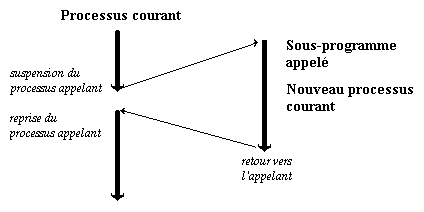Le concepteur, dans une démarche d'écriture structurée, donne grande importance aux routines. La forme générale de son projet est alors un ensemble de nombreux sous-programmes, chacun étant de taille fort réduite et de fonctionnalité simple, et l'exécution consiste en de nombreux appels de ces sous-programmes.
Le programme principal a un rôle de lanceur. Il réalise certaines initialisations, puis passe la main. Dans tous les cas, c'est par lui qui commence l'exécution et également qu'elle se termine.
-
Bloc et Portée d'une déclaration :
Un bloc est composé d'un ensemble de déclarations suivi d'un ensemble d'instructions. Chaque bloc est contenu dans une déclaration de procédure, de fonction, de programme (ou d'unité).
Tous les identificateurs déclarés dans la partie déclaration d'un bloc sont locaux à ce bloc.
Une déclaration introduit un nom (identificateur) dans une portée.
La portée d'une déclaration est la partie du texte du programme où l'association entre le nom de l'objet déclaré et sa desccription est d'application.
On parle aussi parfois du domaine d'application d'une déclaration en lieu et place de la portée d'une déclaration.
La portée d'un identificateur déclaré dans une déclaration de constantes, de types, de variables, de procédures ou de fonctions s'étend de l'endroit de la déclaration jusqu'à la fin du bloc courant, en incluant tous les blocs définis à l'intérieur de ce bloc courant.
Un identificateur déclaré dans un bloc peut être redéclaré dans un bloc plus interne.
Visibilité :
Une déclaration est visible dans la partie du texte où on peut l'identifier, c'est-à-dire où le nom déclaré peut être écrit et signifier l'objet décrit. Un identificateur est visible là où sa déclaration est visible.
Une déclaration peut être visible dans toute l'étendue de sa portée mais peut aussi être masquée par d'autres déclarations dont la portée et la visibilité chevauchent celles de la première déclaration.
-
Durée de vie :
Les variables et les sous-programmes, contrairement aux types, existent lors de l'exécution du programme < ils occupent une place mémoire.
La durée de vie d'un objet est la période durant laquelle cette mémoire lui est allouée.
La durée de vie d'un objet est dite permanente si cette mémoire lui est allouée pour toute la durée de l'exécution du programme.
La durée de vie d'un objet est dite permanente si cette mémoire lui esr allouée pour toute la durée de l'exécution du programme.
Une variable peut avoir une durée de vie temporaire. Elle est alors créée à l'entrée du sous-programme contenant sa déclaration et détruite quand son nom sort de sa portée.
durée de DYNAMIQUE (liée à l'exécution du programme)
portée = propriété STATIQUE (liée au texte du programme)
Variables globales et variables locales (résumé) :
Les programmes jusqu'à présent rencontrés étaient constitués d'un seul bloc. Comme on n'y avait déclaré aucun sous-programme, il n'y avait pas d'imbrication de blocs. Les variables étaient toutes des variables globales. Elles avaient été déclarées dans le bloc principal du programme; leur durée de vie était celle du programme.
La portée de la déclaration d'une variable globale s'étend de l'endroit de sa déclaration jusqu'à la fin du bloc courant c'est-à-dire jusqu'à la fin du programme.
Il conviendra de réduire au maximum cette portée... De ce fait, nous ne serons pas tentés d'utiliser des variables globales à l'intérieur des sous-programmes.
Une bonne règle de programmation étant de construire des sous-programmes étanches.
Les variables déclarées dans un sous-programme auront une durée de vie qui correspondra à l'exécution de ce sous-programme. De telles variables locales.
La portée de la déclaration d'une variable locale s'étend de l'endroit de sa déclaration jusqu'à la fin du bloc du sous-programme. Il y a cohérence entre la propriété statique de portée et la propriété dynamique de durée de vie.
Une fonction doit constituer un tout; elle doit être "étanche", et compréhensible en dehors du contexte dans lequel elle est utilisée. C'est d'ailleurs à ce prix que vous pourrez la réutiliser dans d'autres programmes.
-
Procédures - Introduction :
Une procédure est destinée à réaliser une action, un traitement. Elle correspond à la notion de sous-programme dans toute sa généralité. Son appel sera assimilable à une instruction.
Comme premier exemple, nous pourrions définir une procédure erreur dont l'effet est pour le moins dévasteur.
procedure erreur(const message : String) ; begin writeLn(message) ; halt end ;Cette procédure fait elle-même appel à deux procédures prédéfinies.
La procédure d'affichage writeLn et la procédure halt qui exécute une fin anormale de programme !
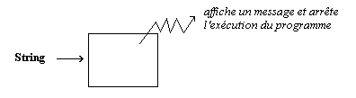Nous avons déjà rencontré des procédures dont "l'effet" étaient de modifier des variables. Ainsi la procédure inc permet d'incrémenter la valeur d'une variable. C'est la variable qu'il conviendra de transmettre au sous-programme !
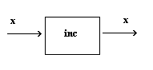… { assert(x=12) } inc(x) ; { assert(x=13) } …Pour que la procédure soit un outil général, il convient qu'elle puisse aussi restituer une ou plusieurs valeurs au programme (ou sous-programme) appelant.
Un nouveau mode de transmission de paramètres sera alors nécessaire. Nous l'étudierons après avoir précisé la syntaxe d'une délcaration de procédure.
-
Déclaration (de définition) de procédure :
Une déclaration de procédure associe un identificateur à un bloc d'instructions.
L'appel de la procédure se fera par une instruction de procédure; celle-ci spécifie l'identificateur de la procédure, ainsi que les paramètres effectifs, si nécessaire. Quand une procédure est appelée, le contrôle se trouve transféré au début de la procédure. Après avoir exécuté les instructions qui composent le traitement de la procédure, le contrôle retourne automatiquement à l'instruction qui suit l'instruction d'appel de la procédure.
L'en-tête de la procédure est suivi :
-
d'une partie déclaration qui déclare les objets locaux;
-
des instructions comprises entre begin et end, qui spécifient ce qui doit être exécuté lorsqu'il est fait appel à la procédure.
-
-
Paramètres variable :
Répétons-le, un paramètre valeur est simplement une variable locale au sous-programme, qui lors de son activation a été initialisée à la valeur du paramètre effectif correspondant.
Si vous transmettez une variable comme paramètre valeur, la routine en crée une copie et les modifications apportées à la copie sont sans effet sur la variable d'origine et sont perdues quand l'exécution du programme revient à l'appel de la routine.
Un paramètre variable se comporte, lui, comme une sorte d'alias, un autre nom permettant d'accéder au paramètre effectif qui doit être une variable (référence à une variable).
Un paramètre variable dénote une variable !
De ce fait, les modifications apportées aux paramètres dans le corps de la routine sont conservées lorsque l'exécution du programme revient à l'appel de la routine et que le nom du paramètre est hors de portée.
Rappelez-vous qu'un identificateur de variable représente en fait l'adresse symbolique de la case mémoire correspondant à la variable désignée. Le paramètre formel variable est dans la procédure un nouveau nom pour la variable référencée par le paramètre effectif. Ainsi, le paramètre formel et le paramètre effectif font référence à la même case mémoire.
En conséquence, modifier le paramètre formel dans un sous-programme, c'est en fait modifier le paramètre effectif correspondant.
On comprend alors pourquoi cette technique est utilisée pour les paramètres de retour (lorsqu'une valeur doit être renvoyée à l'appelant d'une procédure) et pourquoi paramètres formels et effectifs doivent être de types rigoureusement identiques.
Une liste de paramètres par adresse est précédée du mot réservé var.
L'exemple classique suivant bien la différence entre les deux types de paramètres.
program val_var ; {$APPTYPE CONSOLE} procedure echange_local( a,b : integer ) ; var x : integer ; begin x := a ; a := b ; b := x end ; procedure echange( var a,b : integer ) ; var x : integer ; begin x := a ; a := b ; b := x end ; var x,y : integer ; begin x := 1 ; y := 2 ; writeln(x:8,y:8) ; { 1 2} echange_local(x,y) ; writeln(x:8,y:8) ; { 1 2} echange(x,y) ; writeln(x:8,y:8) ; { 2 1} readLn end. -
Une nouveauté : les paramètres out :
(Manuel de référence) :
Un paramètre de sortie (out) est transmis par adresse comme un paramètre variable. Mais avec un paramètre out, la valeur initiale de la variable référencée n'est pas prise en compte par la routine à laquelle elle est transmise. Le paramètre out n'est utilisé qu'en sortie; il indique simplement à la routine où placer la valeur en sortie sans spécifier de valeur en entrée.
Soit, par exemple, l'en-tête de procédure suivant :
procedure ExtraitInfos(out Info: UnTypeEnreg);Quand vous appelez ExtraitInfos, vous devez lui transmettre une variable de type UnTypeEnreg :
var MonEnreg: UnTypeEnreg; ... ExtraitInfos(MonEnreg);Mais vous n'utilisez pas MonEnreg pour transmettre des données à la procédure ExtraitInfos; MonEnreg sert simplemeent de conteneur où ExtraitInfos stocke les informations qu'elle génère. L'appel de ExtraitInfos libère immédiatement la mémoire utilisée par MonEnreg, avant que le contrôle du programme ne passe à la procédure.
Les paramètres Out sont fréquememment utilisés avec les modèles d'objets distribués comme COM ou COBRA. De plus, vous devez utiliser des paramètres out pour transmettre une variable non initialisée à une routine.
-
Transfert de paramètre :
Les paramètres sont transmis aux procédures et aux fonctions par l'intermédiaire (des registres CPU ou) de la pile, selon la convention d'appel de la routine.
Selon une des conventions possibles, les paramètres sont placés, avant l'appel du sous-programme, dans la pile suivant l'ordre de leur déclaration. Juste avant la fin de son exécution, le sous-programme retire tous les paramètres de la pile.
La structure d'appel d'une routine pourrait être la suivante :
PUSH param1 PUSH param2 … PUSH paramN CALL routineIl n'existe que deux sortes de transmission :
-
par valeur,
-
par référence ou adresse.
Lorsqu'un paramètre est transmis par adresse, un pointeur sur l'emplacement en mémoire de la "valeur" à transmettre est placé dans la pile.
Pour une transmission par valeur, c'est la valeur elle-même qui est placée dans la pile.
Les paramètres variables (et de sortie) sont toujours transmis par adresse.
Les paramètres valeurs (et constantes) sont transmis, suivant leur type et leur taille, par adresse ou par valeur.
En général, si le paramètre occupe quelques octets, la valeur est directement placée dans la pile. Sinon, le sous-programme appelé copie la valeur dans une zone de mémoire locale et c'est un pointeur sur cette zone qui est placé dans la pile.
L'effcicacité des paramètres constantes par rapport aux paramètres valeurs vient de ce que le compilateur n'a pas à générer de copie des paramètres effectifs à l'entrée dans le sous-programme puisque les paramètres constantes ne sont pas modifiables !
-
-
Laboratoire d'analyse :
Comme petit exercice, analysez le programme suivant :
(fonction, procédure et contexte d'appel...)
program test; {$APPTYPE CONSOLE} procedure NumString(N:Integer;var S:String) ; overload ; var V : Integer ; begin V := abs(N) ; S := '' ; repeat S := chr(V mod 10 + ord('0')) + S ; V := V div 10 until V = 0 ; if N < 0 then S := '-'+ S end ; function NumString(N : Integer) : String ; overload ; var V : Integer ; begin V := abs(N) ; Result := '' ; repeat Result := chr(V mod 10 + ord('0')) + Result ; V := V div 10 until V = 0 ; if N < 0 then REsult := '-'+ Result end ; var str : String ; begin NumString(-12345,str) ; writeLn(str) ; writeLn(NumString(-12345)) ; readLn end .
Tableaux (Array) :
-
Généralités :
Lorsqu'un nombre important de variables de même type et surtout associées à une même catégorie d'objet, doit être utilisé dans un programme, il est bien entendu impossible d'envisager d'attribuer un identificateur différent à chaque variable (par exemple le chiffre d'affaires quotidien d'un représentant).
Les tableaux permettent de résoudre cette difficulté.
Un tableau est une manière assez naturelle de ranger des éléments de même type. Il permet de regrouper ceux-ci dans une structure fixe et d'accéder à chaque élément par le biais d'un indice.
On peut considérer une variable tableau comme un tableau de variables.
-
Définition :
Un tableau est une structure constituée d'un nombre fixe d'éléments du même type qui est appelé type de base ou type composant.
Il s'agit donc d'une structure homogène.
Nous pouvons construire des tableaux d'entiers, des tableaux de booléens, mais aussi des tableaux de chaînes et pourquoi pas... des tableaux de tableaux !
Un tableau est aussi une structure dite à accès aléatoire : à un instant donné, on peut sélectionner n'importe quel composant. Le temps d'accès à un élément est indépendant de la place qu'occupe cet élément dans la structure.
Pour désigner, pour référencer un composant, on ajoute entre crochets au nom de la variable de type tableau ce qu'on appelle un indice. Cet indice signale la position de l'élément dans le tableau et doit être une valeur du type défini comme le type d'indice du tableau.
Le type de l'indice permet de définir le nombre d'éléments du tableau. En Pascal, les types autorisés pour les indices sont tous les types scalaires.
La définition d'un type de tableau TT spécifie à la fois un type de base TB et un type d'indice TI.
Type TT = ARRAY[TI] of TB ;Exemples :
Type Tab1_20Real = ARRAY [1..20] of Real ; Tab0_255Boolean = ARRAY [byte] of Boolean ; var t1,t2 : Tab1_20Real ; t3,t4 : Tab0_255Boolean ; Type Tetat = (travail,conge,recuperation,in¬defini) ; Tjour = (lun,mar,mer,jeu,ven,sam,dim) ; Tableau = ARRAY [Tjour] of Tetat ; var t : Tableau ; ...Notez cependant qu'il peut exister des restrictions qui dépendent de la capacité mémoire et non de la définition du langage.
type TropGros = array [Longint] of Extended ; { erreur => type de donnée trop grand : dépasse 2Go }Remarque : Le type des composants d'un tableau peut être lui-même d'un type tableau; nous obtenons ainsi des tableaux de tableaux "ou" tableaux multidimensionnels.
Type Tvecteur = ARRAY [1..3] of Extended ; Tmatrice = ARRAY [1..5] of Tvecteur ; var m : Tmatrice ;Pour référencer l'élément de la matrice correspondant à la ième ligne et à la jème colonne, nous pouvons écrire m[i][j] ou encore m[i,j].
Nous aurions pu définir le type Tmatrice autrement :
Type Tmatrice = ARRAY [1..5] of ARRAY [1..3] od Extended ; // ou encore Tmatrice = ARRAY[1..5,1..3] of Extended ;Ces définitions sont cependant moins souples que la première qui permet une assignation tel que : v := m[k] en supposant que v est une variable de type Tvecteur.
-
Opérations sur les tableaux :
La seule opération globale sur des tableaux est l'affectation. Celle-ci n'est possible que si les deux tableaux sont rigoureusement de même type.
Supposons les déclarations suivantes :
type Tab1 = ARRAY [1..5] of integer ; Tab2 = ARRAY [1..5] of integer ; var t,t1 : Tab1 ; t2 : Tab2 ;l'affectation t1 := t est possible alors que l'affectation t1 := t2 ne l'est pas car les types tab1 et tab2 sont distincts !
-
Les procédures prédéfinies de lecture et écriture (readln, writeln, ...) ne permettent que de traiter des nombres des chaînes - étant bien entendu qu'il s'agit de variables pour les lectures et d'expressions pour les écritures.
Il conviendra donc de lire ou d'écrire successivement chaque élément du tableau.
... for k := 1 to 5 do begin write('t[',k,'] = '); readln(t[k]) end; ... -
Les opérations réalisables sur un élément de tableaux sont celles réalisables sur le type composant. Ainsi, dans notre exemple, t1[3] est assimilable à une variable entière. Il s'agit d'une extension de la notion de variable : un composant d'une variable de type structuré est une référence à une variable et correspond donc à un emplacement adressable.
Au niveau représentation en mémoire, un tableau est stocké comme une séquence de variables adjacentes de même type que le type de base du tableau.
Lorsque les fonctions low et high sont appliquées à un identificateur de type tableau ou une référence d'un type tableau, elles retournent les bornes inférieures et supérieure du type d'indice du tableau.
program highlow ; {$APPTYPE CONSOLE} const IndMin = 1 ; IndMax = 10 ; type TMajuscule = 'A'..'Z' ; TIndex = IndMin..IndMax ; TabA_ZInt = array[TMajuscule] of Integer ; Tab1_10Int = array[TIndex] of Integer ; var M : TabA_ZInt ; L : Tab1_10Int ; begin writeln(low(TabA_zInt):8,low(M):8) ; writeln(high(TabA_zInt):8,high(M):8) ; writeln(low(Tab1_10Int):8,low(L):8) ; writeln(high(Tab1_10Int):8,high(L):8) ; readLn end.
Exemple :
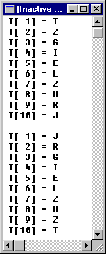program testab ; {$APPTYPE CONSOLE} const IndMin = 1 ; IndMax = 10 ; type TMajuscule = 'A'..'Z' ; TIndex = IndMin..IndMax ; Tableau = array[Tindex] of TMajuscule ; procedure afficheTableau(const T : Tableau) ; var k : TIndex ; begin for k := low(T) to high(T) do writeln('T[',k:2,'] = ',T[k]) ; writeln end ; function genereTableau : Tableau ; var k : TIndex ; begin for k := low(Result) to high(Result) do Result[k] := char(65 + random(26)) end ; procedure echange(var x,y : TMajuscule) ; var tmp : TMajuscule ; begin tmp := x ; x := y ; y : tmp end ; var Tab : Tableau ; begin randomize ; tab := genereTableau ; afficheTableau(tab) ; echange(tab[1],tab[10]) ; echange(tab[2], tab[9]) ; afficheTableau(tab) ; readLn end. -
-
Constante typée :
Pascal Objet autorise la définition de constantes de type tableau sauf celles qui contiennent des éléments de type fichier.
type TEtat = (actif,passif,attente) ; TabEtat : array [TEtat] of String ; const ETATTOSTR : TabEtat = ('actif','passif','attente') ;La constante tableau ETATTOSTR peut être utilisée pour convertir les valeurs du type énuméré TEtat en leur représentation sous forme de chaîne de caractères.
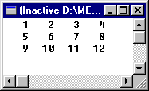type TCarre = array[1..3,1..4] of Integer ; const UNCARRE : TCarre = ( (1,2,3,4) , (5,6,7,8) , (9,10,11,12) ) ;procedure afficheCarre(const C:TCarre) ; var j,k : Byte ; begin for j := 1 to 3 do begin for k := 1 to 4 do write(C[j,k]:4) {od} ; end{do} ; writeln end ; -
Paramètres tableaux ouverts :
Les paramètres tableaux ouverts permettent de transmettre à un même sous-programme des tableaux de tailles différentes.